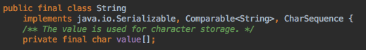
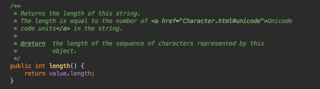
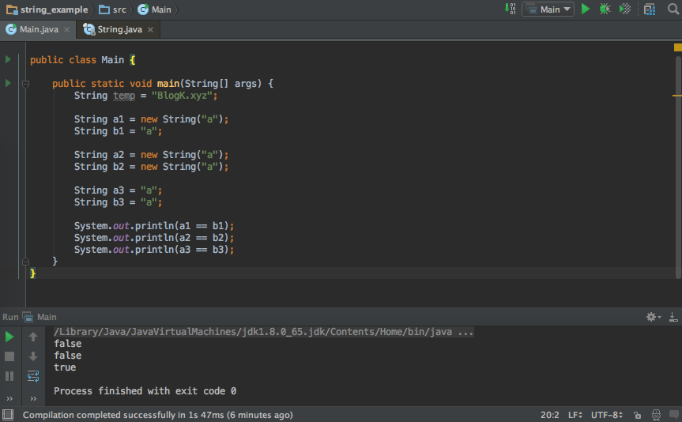
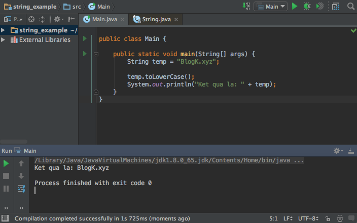
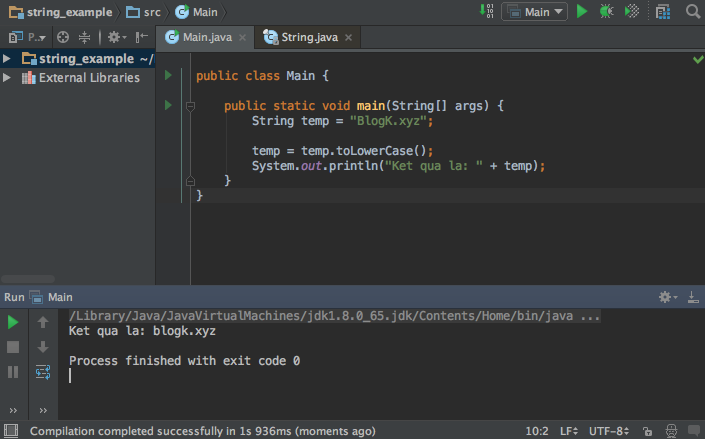

Hồi trước đi làm test của mấy công ti thấy lạ sao họ cho nhiều câu về String thế, thực sự lúc đó tôi chỉ nghĩ String thì có đếch gì đâu nhỉ, chỉ là 1 mảng các char + vài hàm phụ thêm thôi chứ có gì đâu, cái cần quan tâm là Thread, là OOP kia kìa… Cho đến một ngày, tôi đã tò mò về nó và tìm hiểu, và mọi suy nghĩ hồi trước của tôi đã thay đổi…
String, một cái tên không còn xa lạ đối với tất cả lập trình viên. Chẳng cần nói thì hẳn ai cũng có thể thấy String quan trọng với giới lập trình thế nào. Nhờ có String mà thế giới mới có thể giao tiếp với nhau, web mới có nội dung, text mới có thể hiển thị, tôi mới có thể viết blog, bạn mới có thể vào blog và xem bài này :D
…
Ok
Vậy ta cùng tìm hiểu kĩ hơn về nó nhé :D
(À tôi là lập trình viên Java, nên những điều tôi nói ở đây sẽ là String trong Java nhé)
String là gì?
String là một dãy hoặc một mảng gồm các kí tự. Kí tự cuối cùng là kí tự \0 (NULL trong bảng mã ASCII)
Thử vọc vào lớp String của JAVa xem có gì nào
Để ý những dòng đầu tiên lớp String.java ta sẽ thấy 2 dòng này:
|
|

Nếu bạn để ý thêm, bạn sẽ thấy lớp String này sử dụng thao tác hầu hết trên mảng value.
Dạo qua phương thức nổi tiếng này xem sao nhé:

Hàm length() là hàm lấy độ dài chuỗi String và như code ta thấy hàm này trả về độ dài của mảng value kia.
Bạn tin tôi rồi chứ, “String là một mảng các kí tự!”
String hoạt động thế nào?
Cho một ví dụ sau:
Hãy dự đoán kết quả in ra màn hình console khi compile and build đoạn chương trình sau:
(Trước khi đọc đáp án, tôi đề nghị bạn hãy suy nghĩ thật kĩ và đưa ra một câu trả lời cho mình, điều này rất quan trọng!)
|
|
Suy nghĩ-ing …
Và đây là câu trả lời của JVM

Tại sao vậy?
Bối rối quá! Tại sao kết quả cuối lại là true vậy??
Chẳng lẽ JVM lại sai @@
…
Để biết JVM sai hay không ta cùng mổ xẻ vấn đề nhé!
Đầu tiên, nói về toán tử == của Java, nó là toán tử dùng để kiểm tra sự tương đương giá trị của 2 biến, nếu 2 biến có giá trị tương đương thì trả về true, ngược lại là false; Nếu 2 biến kiểm tra có kiểu tham chiếu thì phép == kiểm tra 2 biến này có tham chiếu tới cùng một đối tượng trong bộ nhớ không, nếu có thì trả về true, ngược lại là false.
Tiếp, nói về từ khoá new của Java, nó giúp ta ra lệnh cho JVM (Java Virtual Machine) tạo một đối tượng mới “hoàn toàn” trong không gian nhớ.
Ví dụ: String a = new String(“abc”) sẽ kiểu kiểu như: “Ê JVM, tạo cho ta một thằng String mới tên là a có giá trị là “abc” nhé, nhớ là thằng này phải còn “zin” đấy nhé!”
2 khái niệm này có gợi cho bạn thông điệp nào không? Thử đoán xem!
Khám phá
Ok, từ 2 điều trên ta rút ra được 1 điều quan trọng là: cặp a1, b1 và cặp a2, b2 không cùng tham chiếu tới một đối tượng, nhưng cặp a3, b3 lại có!
Nghịch lí nhỉ?
String Literal & String Pool
Để trả lời thắc mắc trên, chúng ta cần tìm hiểu tới một khái niệm gọi là String Pool và String Literal
Khi bạn khởi tạo một biến String với chuỗi nằm trong dấu ngoặc kép " " (ví dụ: String s = “heloo”) tức là bạn đang khởi tạo một đối tượng String Literal và đối tượng String này được cất giữ ở trong một vùng nhớ đặc biệt gọi là String Pool. Mỗi khi bạn khởi tạo một String Literal tiếp theo, JVM sẽ kiểm tra String Pool; nếu chuỗi đã tồn tại trong Pool, một tham chiếu tới String Literal tương ứng được trả về, nếu không JVM sẽ khởi tạo một đối tượng String mới và đặt nó vào trong Pool
Việc không tạo đối tượng mới mà trả về một tham chiếu tới một đối tượng có cùng giá trị là điều khác nhau cơ bản giữa việc sử dụng String Literal và từ khoá new
Tại sao là String Literal?
String Literal khiến việc quản lí bộ nhớ của JVM được hiệu quả hơn
Giá trị của một đối tượng String không bao giờ thay đổi!
Tất cả các hàm sử lí chuỗi có sẵn của lớp String đều trả về một đối tượng String mới và không làm thay đổi giá trị của String đã cho
Tiếp một ví dụ nữa nhé :D
Hãy dự đoán kết quả sau khi compile and run đoạn mã sau:
|
|
Kết quả:

Tuy được gọi hàm toLowerCase() nhưng đối tượng String vẫn không thay đổi giá trị. Nếu muốn một kết quả như mong đợi, hãy dùng một tham chiếu khác để hứng kết quả này (hoặc dùng chính tham chiếu cũ nếu bạn không muốn tạo thêm biến mới)
Sửa lại một chút và chạy sẽ ra kết quả như mong đợi:

Dạo qua những hàm xử lí String cơ bản
Cho chuỗi ban đầu: String s = “BlogK.xyz”
concat(String anotherString):
Hàm nối String. Trả về một String mới có giá trị là: s + anotherString
Ví dụ: kết quả của s.concat(“1234”) là “BlogK.xyz1234”
replace(String oldString, String newString):
Hàm thay thế những chuỗi con bằng một chuỗi mới
Ví dụ: kết quả của s.replace(“xyz”, “abc”) là “BlogK.abc”
equals(String anotherString)
Hàm so sánh 2 chuỗi có phải 2 chuỗi giống nhau không, nếu 2 chuỗi giống nhau trả về TRUE, nếu không giống nhau trả về FALSE
Ví dụ: s.equals(“blogk.xyz”) trả về false
Nếu bạn muốn kiểm tra 2 chuỗi giống nhau không phân biệt hoa thường thì hãy dùng hàm này: equalsIgnoreCase(). Ví dụ vẫn sử dụng đầu vào của ví dụ trên nhưng ta sử dụng hàm mới: s.equalsIgnoreCase(“blogk.xyz”) trả về TRUE
charAt(int index)
Hàm trả về kí tự tại một vị trí nào đó (vị trí index được truyền vào)
trim():
Hàm cắt bỏ khoảng trống thừa
Ví dụ: cho chuỗi tempString = " blogk.xyz ". tempString.trim() trả về một chuỗi mới có giá trị là “blogk.xyz”
codePointAt(int index)
Hàm lấy mã ASCII của một kí tự tại vị trí nào đó (vị trí index được truyền vào)
Ví dụ: s.codePointAt(0) trả về 66 (mã ASCII của ‘B’ là 66)
contains(String anotherString):
Hàm kiểm tra một chuỗi có tồn tại trong chuỗi đã cho hay không, Nếu tồn tại trả về TRUE, nếu không trả về FALSE
Ví dụ: s.contains(“K.xy”) trả về TRUE
length():
Hàm lấy độ dài chuỗi
Lời kết:
Phù. Bài viết cũng khá dài đấy chứ. Cám ơn bạn vì đã nghe tôi nói tới tận dòng này :D
String thực sự có khá nhiều điều hay ho mà khi tìm hiểu làm ta cảm thấy rất thích thú. Qua bài này tôi chỉ muốn bạn chú ý đến 2 điều mà theo tôi là quan trọng nhất:
- Khái niệm String Literal
- String trong Java là không thể thay đổi (immutable)
Trong bài tiếp theo tôi sẽ nói về String buffer & String builder.